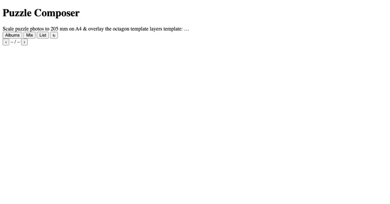
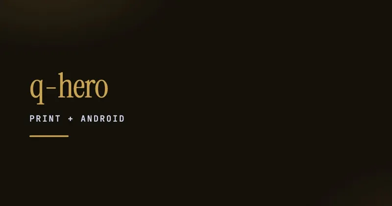

A working space for hand-built objects — paper engineering, low-cost prototyping, and the small mechanical ideas that fall out of folding things at the desk.
I have a long-running soft spot for paper, scissors, and folded mechanism. Most evenings end with a sketch, a print-out, a few cuts, and the question can this hinge?.
The work spans paper engineering, low-cost prototyping, and quietly mechanical assemblies — pieces that move, snap, or unfold the way a small machine should.
Some of these experiments stayed as one-off objects. One of them — Stakco — kept going, through iterations, exhibitions, and production runs. That is the flagship and the reason this page exists.
Beyond Stakco, this page collects the smaller paper-craft work: the prototypes that didn't grow up, but were too good to throw away.
The longest-running paper-engineering project — a folded, stackable object that grew from a desk experiment into a multi-prototype, multi-exhibition platform.
Stakco started as a paper-engineering experiment and grew into a family of objects that sit at the intersection of craft, mechanism, and play. Across iterations it has been a watch, a light, a puzzle, and a research artefact for academic venues.
The thread is the same throughout: a small folded structure, hand-buildable, designed for stacking and configuration — a piece of paper that knows what it wants to be.
Smaller pieces — sketches, prototypes, single-evening experiments. Some led to Stakco. Others are happy to stay one-offs.
Hinges, snap-fits, and tension structures built from single sheets — the vocabulary that eventually fed into Stakco.
photos to be addedCards, scenes, and pop-up structures — the playful end of paper engineering.
photos to be addedPaper as a lampshade material — diffusing, shadow-casting, and the ergonomics of a switch you can fold.
photos to be addedNew paper experiments will land here as they earn a write-up — a line drawing, a few photos, what worked, what tore.
to be addedPrint-and-paper tooling that grew out of this lens — small utilities that turn a folder of art into something you can cut, print, or scan. Both are still bench-side, not yet on a public subdomain.

Lays out album photos at true physical scale — each scaled into a 205 mm square on A4 and overlaid with the layers of an octagon puzzle-cutting PDF template, rendered 1:1 in real millimetres.
in the lab
A print-and-scan superhero game — an A4 sheet of QR-style codes that a companion Android app reads to assemble mix-and-match hero characters from interchangeable face and body art.
in the labA handful of habits the paper has taught me. Mostly: cheap materials, fast iterations, and the willingness to throw a piece away the moment it stops earning its keep.
Build photos, fold diagrams, and downloadable patterns will be added here as each piece is documented.